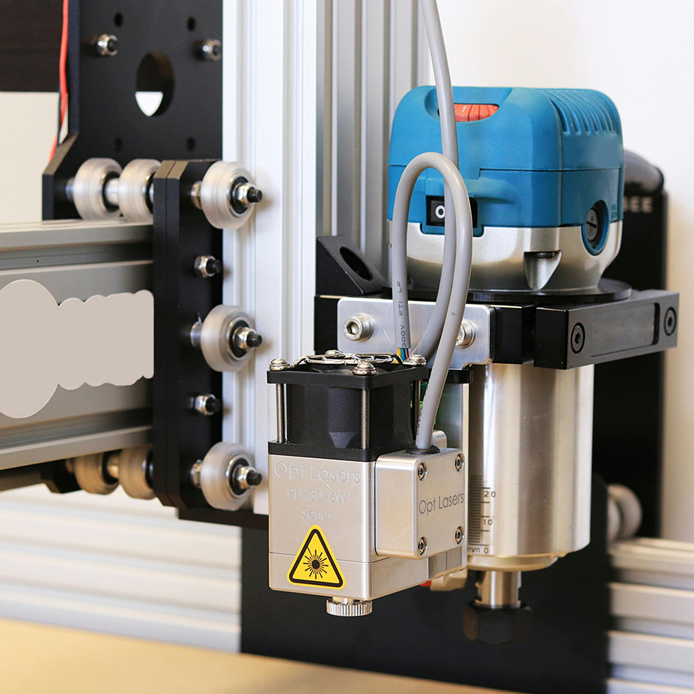

Ervaringen
Als 35 jarige man heb ik natuurlijk al wel wat ervaringen opgedaan in verschillende branches. Ik ben in mijn middelbaar begonnen met een opleiding aan de hotelschool VTI t’ Spijker in Hoogstraten.


Hier heb ik ook mijn job van gemaakt tot mijn 21 jaar. Daarna heb ik een enorme carrière switch gemaakt en ben ik klinkerlegger geworden tot mijn 25 jaar, maar dit heb ik moeten stopzetten wegens fysieke klachten.
Ik ben toen een opleiding Networking & Routing gaan volgen van Cisco. Deze heb ik met glans afgemaakt, maar niet vervolgd met een job. Wel ontdekte ik hier dat ik iets anders nodig had binnen de IT... PROGRAMMEREN!!

Dan ben ik C&C Operator geworden in het bedrijf Eribel te Rijkevorsel voor 6 jaar. Ze zijn gespecialiseerd in allesbehalve een "normale" deur. Denk aan gevangenisdeuren, klimaatdeuren, akoestische enz... Maar opnieuw ben ik hier gestopt omdat de drang naar programmeren groter werd dan de durf om het niet te doen... Hier leer je meer over de weg die me geholpen heeft om het wel te durven.